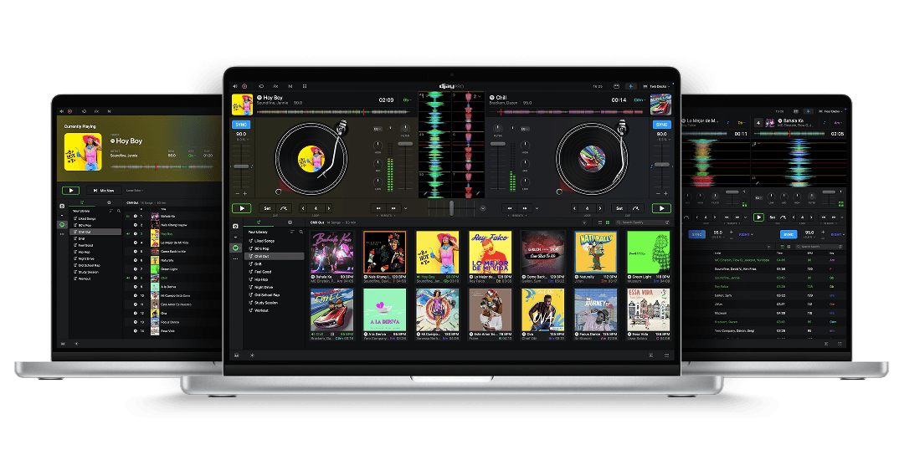
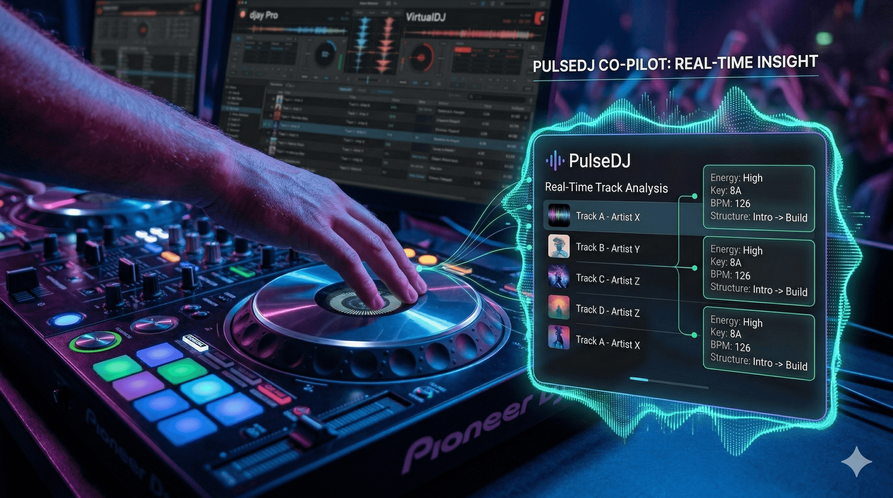
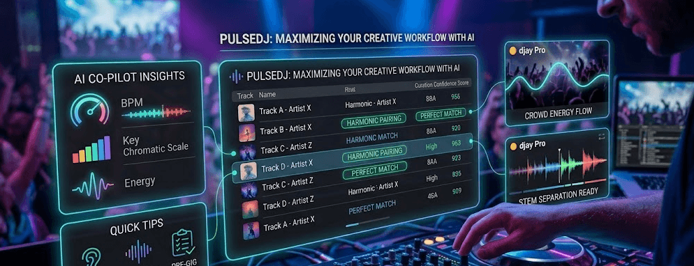

The evolution of artificial intelligence has officially hit the DJ booth, changing how we discover music and transition between tracks in real-time.
What You’ll Learn
- How AI is currently being used to automate track analysis and harmonic matching.
- A breakdown of the top-rated AI DJing applications for different hardware and software setups.
- Tips for maintaining creative control while using automated assistance.
- How to use PulseDJ.com as your ultimate AI-powered set co-pilot.
Introducing PulseDJ.com
As a DJ who has seen the transition from heavy vinyl crates to digital controllers, I’ve watched the "AI revolution" with a mix of skepticism and excitement. While many apps focus on audio processing, PulseDJ.com focuses on the intelligence behind your track selection.
It acts as an AI co-pilot that runs alongside your existing software - like Serato, Rekordbox, or Traktor. Instead of replacing your skills, it enhances them by analyzing the tracks you play and suggesting creative next steps based on analysis from millions of real-world DJ sets. PulseDJ uses a "MyStyle" engine that learns your unique taste over time, combined with the PulseDJ HOT 100 to show you what’s trending on dancefloors globally or in specific countries.
Best of all - it's completely free: Download PulseDJ Now
Top AI DJing Apps Compared
There are several heavy hitters in the space right now. Some focus on the performance aspect, while others are designed to help with the preparation and discovery phase.
App Name
Primary AI Feature
Best For
Compatibility
Intelligent Track Suggestions
Set Programming & Discovery
djay Pro
Neural Mix (Stem Separation)
Mobile & Laptop DJs
macOS, iOS, Windows
VirtualDJ
Real-time Track Separation
Pro Mobile DJs
macOS, Windows
Rekordbox
Track Suggestion & Phrase Analysis
Club Standard Workflows
macOS, Windows
PulseDJ: Your AI Co-Pilot

PulseDJ is unique because it doesn't "hook into" your audio. It works by reading the library and history files your software creates as you play, making it impossible for it to interfere with your performance or cause a crash. It provides real-time suggestions based on the last three tracks you've played, adapting to the energy of your current set.
djay Pro: The Neural Mix Pioneer

Algoriddim’s djay Pro changed the game with "Neural Mix." This allows you to deconstruct tracks into vocals, drums, and instruments in real-time. If you’ve ever wanted to mash up an acapella with a beat from a completely different genre without prepping the track beforehand, this is a powerful tool.
VirtualDJ: Stability and Innovation

VirtualDJ was one of the first to implement high-quality stem separation. Their AI engine is incredibly robust, allowing for seamless transitions even if the tracks weren't originally intended to work together. It’s a workhorse for mobile DJs who need to fulfill random requests on the fly.
Why Real-Time Analysis Matters

The most important part of any AI tool is its ability to understand context. It’s one thing to know the BPM of a song; it’s another thing entirely to know that a specific track usually kills it when played after a specific tech-house anthem.
PulseDJ facilitates this by highlighting harmonically compatible tracks in green, allowing you to identify perfect matches instantly. This "crowd-sourced" intelligence and visual guidance represent the next frontier of DJing, ensuring you stay fresh and "never black out" during a transition.
Maximizing Your Creative Workflow with AI

One of the biggest misconceptions about the Best AI DJing Apps is that they take away the skill of a DJ. In my experience, it’s actually the opposite. When I use PulseDJ alongside my main performance software, I find that I’m more creative because I’m not stuck scrolling through thousands of tracks trying to find that one perfect transition.
Instead of being a "sync monkey," you become a curator. AI tools can handle the data - matching BPMs, checking keys, and analyzing harmonic compatibility - while you focus on the EQ, the effects, and most importantly, the energy of the crowd. This allows you to take more risks. If the AI suggests a track you haven't played in months but shows it's a perfect harmonic match for your current deck, you’re more likely to drop it and create a unique moment that you wouldn't have found manually.
Quick Tips for AI Integration:
- Trust but Verify: Use AI suggestions as a guide, but always trust your ears first.
- Layering: Use stem separation (like in djay Pro) to create "on-the-fly" mashups of the tracks PulseDJ suggests.
- Pre-Gig Prep: Use PulseDJ’s "MyStyle" engine before your set to discover new tracks that fit your specific sound, ensuring your library is always fresh.
Start DJing with PulseDJ
The landscape of DJing is moving fast, and staying ahead means embracing the tools that make your life easier. You don't have to give up your favorite software to start benefiting from AI; PulseDJ is designed as a companion tool that works with any hardware your software supports.
If you’re ready to see what an AI co-pilot can do for your performance, head over to PulseDJ.com and download the app for free . It’s time to spend less time searching your crates and more time connecting with your audience.
‹ Ultimate Open Format DJing Guide for Mastering Multi-Genre Dancefloors